SHIFT
Small Holding Integrated Farming Technologies
One complete set of machines for medium-scale farms and community-supported agriculture: from the first bed to the packed crop tray.
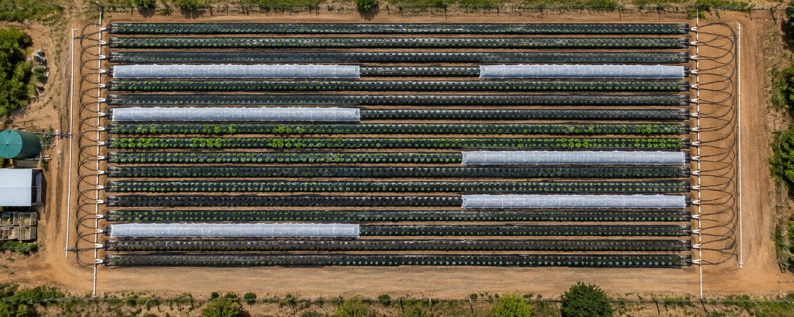
Introduction
One system,
bed to crate
Most farm equipment is sold one tool at a time, and the grower is left to make the pieces fit. SHIFT works the other way round: the beds, tunnels, trays and machines are designed together, so each machine picks up exactly where the last one stopped.
- operations in one pass of the Bedder
- 12
- seedlings per hour, Transplanter capacity
- 3,600
- metre tunnels, installed mechanically
- 2×1 · 4×2
- shared powertrain across the machines
- 1
Machinery built for organic farming
Organic growers have lacked machinery made for the way they farm. AgroSphere Technologies develops high-efficiency tools so that sustainable food production can compete on price with conventional supermarket produce.
For small farmers that means better labour efficiency and a path to financial sustainability, with equipment that is shared rather than bought farm by farm.
Four field machines, the Bedder, Transplanter, Tunneler and Cropper, run on one patented powertrain and follow the bed edge with the same pilot guide. Beds are laid out to a fixed sequence in 50 m or 100 m lengths, so the operator always knows which row comes next.
Around the field machines sits a set of support equipment for drip tape, shade nets and harvest logistics. Drip tape and shade nets are wound, cleaned and reused season after season instead of being thrown away.
SHIFT is built for medium-scale farming and community-supported agriculture: enough mechanisation to farm a hectare well, without needing a tractor fleet.
Reading the field boards
You are in row 11. Turn right into row 16.
Leaving row 16. Turn left into row 13.
Boards at each end of the field tell the driver where he is and where to go next. A full drip tape roll waiting in each bed's pipe protector confirms the next bed has not yet been prepared.
Four machines that behave as one
Every SHIFT farm is laid out the same way: numbered beds of 50 m or 100 m, worked in a fixed order.
Field preparation · Machine 01
SHIFT Bedder
Drip-irrigated, raised, mulched beds in a single pass. Twelve operations that usually need several implements and several trips are combined in one machine.
The uniform beds it leaves serve as rails for the machines that follow. Every later pass, from planting to harvest, runs to the same line.
12 operations, one pass
- Pre-prepares the old bed
- Clears a new path and scrapes everything to the centre of the bed
- Rotovates
- Aerates
- Shreds old roots and loosens clods
- Mixes in the seasonal fertigation application
- Gently forms the soil into a soft, accurate bed
- Cuts a groove beside the bed for burying the mulch
- Lays a prefabricated drip tape harness
- Wraps the mulch over the bed, tucks it into the groove, refills and compacts
- Carries the operator on a chariot to watch every operation
- Adjusts to compensate for any soil texture
Drip irrigation
Every bed is drip-fed. The tape arrives on a trolley, snaps onto the feeder at the head of the bed and is wound back up at the end of the season.
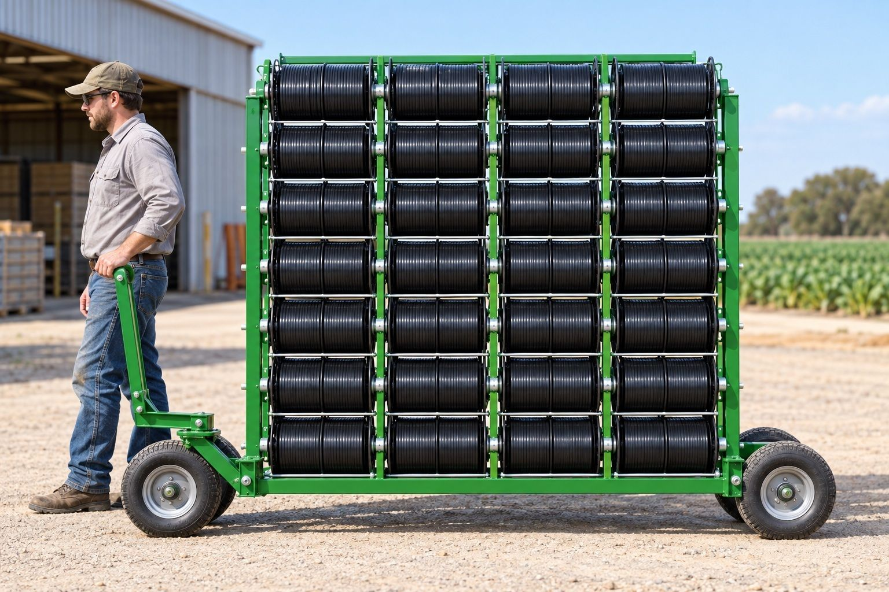
Drip tape trolley
- Capacity
- 32 rolls
- Bed length
- 50 or 100 m
- Towing
- vehicle or tractor
Every component needed to install drip irrigation, on hand at the bed.
Snap-on harness
A drip tape harness with water regulator that snaps on to the feeder, ending leaks and saving hundreds of hours a season.
Switch-over by remote solenoid, or automatically by moisture gauge set between 20 % and 35 %. A metal pipe protector holds the feeder hose and the drip tape roll.
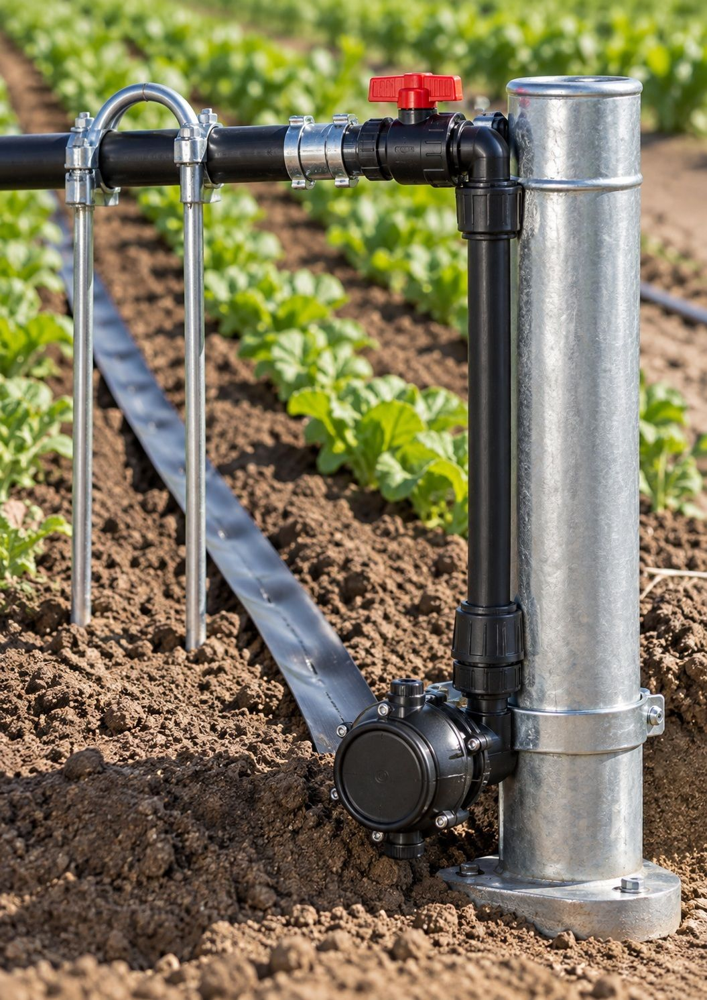
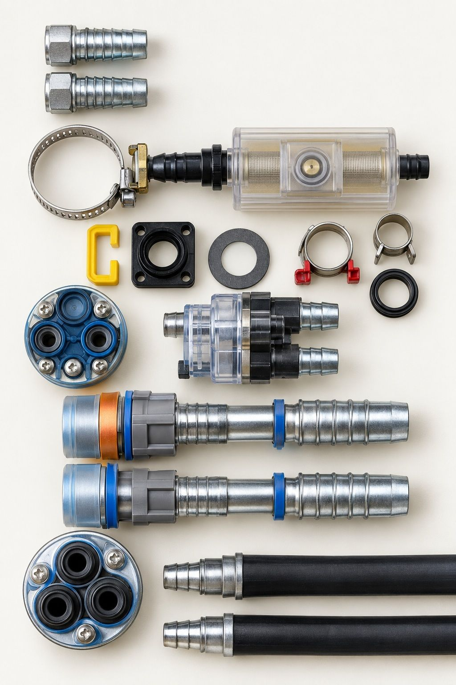
Planting · Machine 02
SHIFT Transplanter
A stop-and-go planting platform for a crew of three. Seedlings are loaded into plant modules and set into the bed at every station, at the spacing the grower chooses.
Two seated planters and one loader. The machine drives itself between stations and follows the bed edge on the pilot guide.
Performance
- Capacity
- up to 3,600 seedlings/h
- Station to station
- 1.02 m
- Travel speed
- 8.62 m/min
- Plant time per station
- 10.0 s
- Station-to-station cycle
- 17.07 s
- Reverse speed
- 17.24 m/min
A day in the field
- Bed time
- 14.22 min
- Manoeuvring time
- 8.0 min
- Bed-to-bed cycle
- 22.22 min
- Beds per 8-hour day
- 21.6
Planting modules & templates
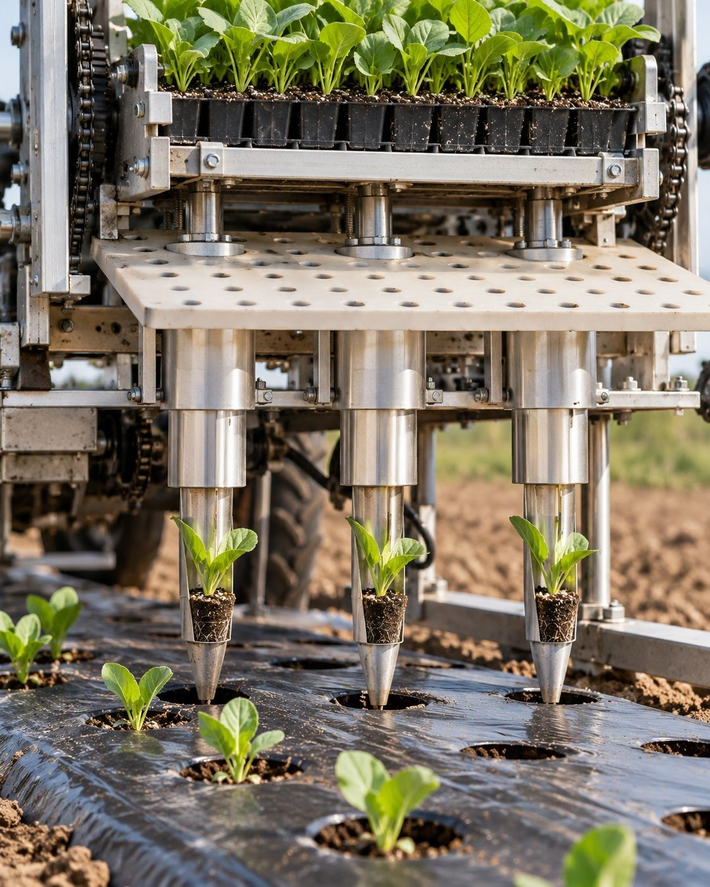
The planting cycle
Seedlings sit in a magazine above a punched template. At each station the plant modules drop through the template, open and set the seedling into the soil, then lift and reload.
- Stop at station 1 and lower the module
- Release and plant
- Secure and reload from the magazine
- Go to station 2
Your spacing, your template
Templates are cut from 1600 × 1000 mm virgin plastic sheets. Each set comes with a punch and slide punch, so the grower marks out the plant spacing for each crop.
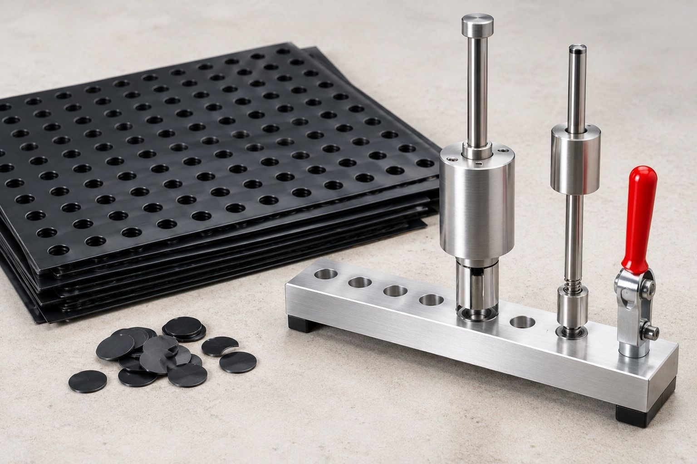
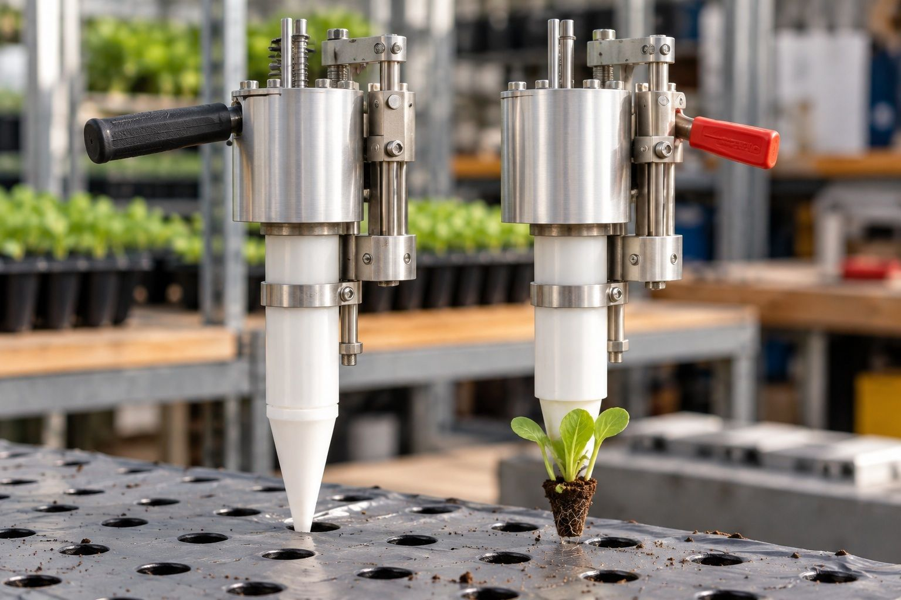
Protection · Machine 03
SHIFT Tunneler
Shade-net tunnels put up and taken down by machine. Two sizes cover everything from low crops to trellised plants.
Features
- Installs Jr 2 × 1 m and Sr 4 × 2 m tunnels mechanically
- Hand-fed mechanisation: the crew feeds hoops and nets, the machine places them
- Chain-driven conveyance of the shade net rolls
- Shade net conveyor, manual or motorised
- Spring-loaded hydraulic planting of the hoop pegs
Tunnel sizes
- Jr tunnel
- 2 × 1 m
- Sr tunnel
- 4 × 2 m
- Jr shade net width
- 3 m
- Sr shade net width
- 6 m
Tunnel system
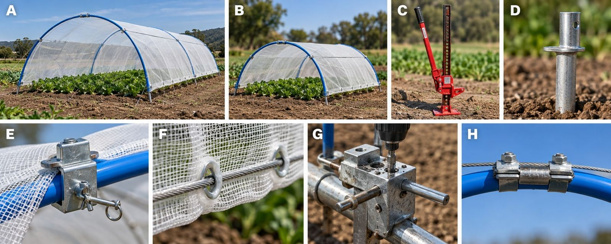
- A
- Sr tunnel: 2 lockable shade net sliders and 2 main stabiliser wire ropes, also used for trellising
- B
- Jr tunnel: 2 lockable shade net sliders and 1 main stabiliser wire rope, also used for trellising
- C
- Ratchet jack for extracting the hoop pegs
- D
- Hoop pegs planted hydraulically from the Tunneler
- E
- Shade net slider, runs up to the main stabiliser wire ropes
- F
- Lower wire ropes threaded permanently through the shade net eyes
- G
- Drilling and tapping jig for the hoop pegs
- H
- Ferrules crimped to the stabiliser rope, twisted between two plates to secure the hoop
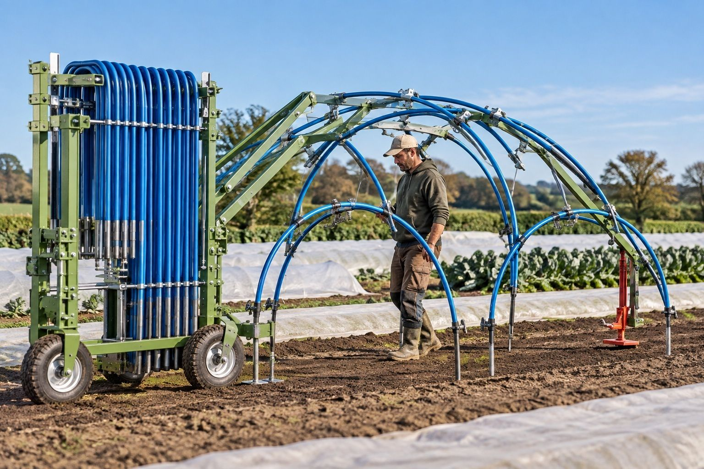
Tunnel hoop collector
Collects and carries hoops between beds. Manual or motorised, with extractor ratchet jack and lever bar; the motorised version can take a hydraulic peg lifter. Hoop capacity follows the length ordered.
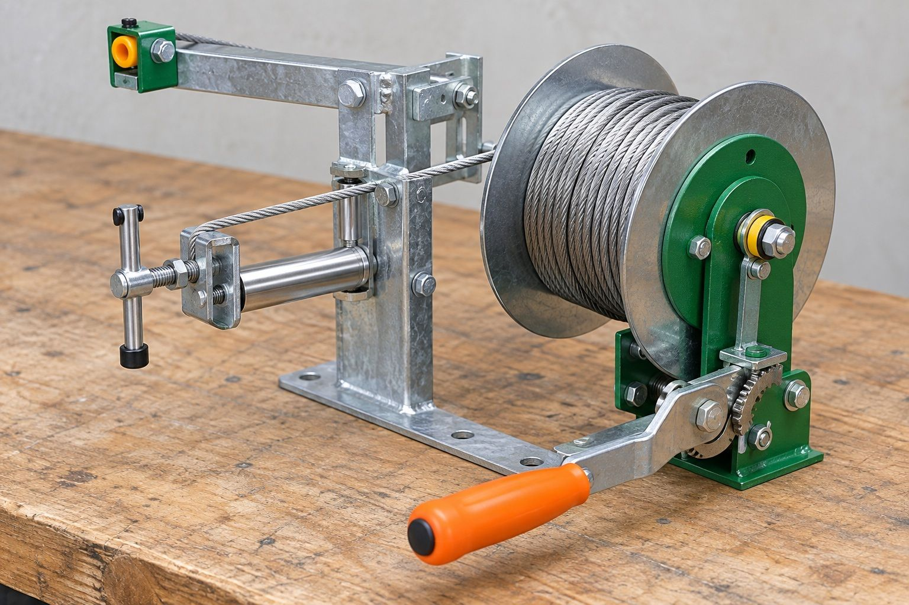
Tunnel anchor cable tensioner
Winds and holds the tunnel anchor cable at tension, by hand crank.
Harvest · Machine 04
SHIFT Cropper
Stem cropping whatever the stem size or toughness. The Cropper cuts the crop and packs it straight into SHIFT crop trays, ready to leave the field.
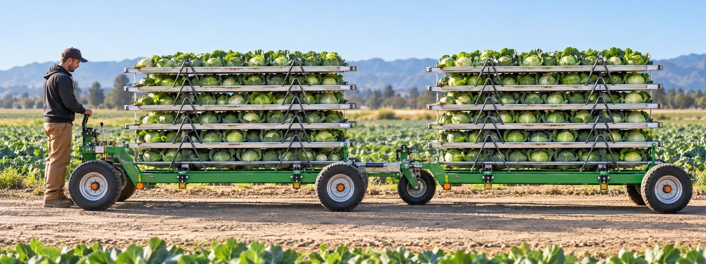
Crop tray trolley
Trolleys hitch together into a train. They carry the harvest to the packing station, unload, and bring empty trays straight back to the Cropper.
Support equipment
Wound, cleaned,
reused
Drip tape and shade nets are the consumables of bed farming. SHIFT winds them back up at the end of the season so they go out again the next.
Drip tape winder
Fast, precise winding means drip tape is reused rather than thrown away: a minimum of ten seasons from every roll.
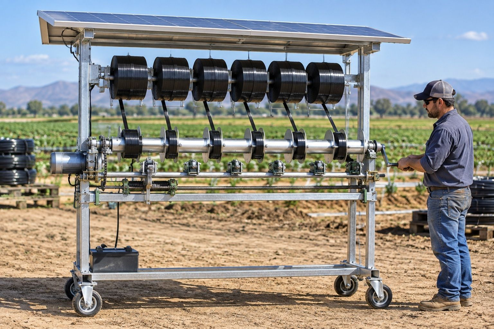
Specification
- Winding speed
- 300 m/min
- Standard roll
- 6 rolls, 50 or 100 m
- Tape life
- 10+ seasons
- Drive
- automated or manual
- Power
- solar
- Housing
- weather protected
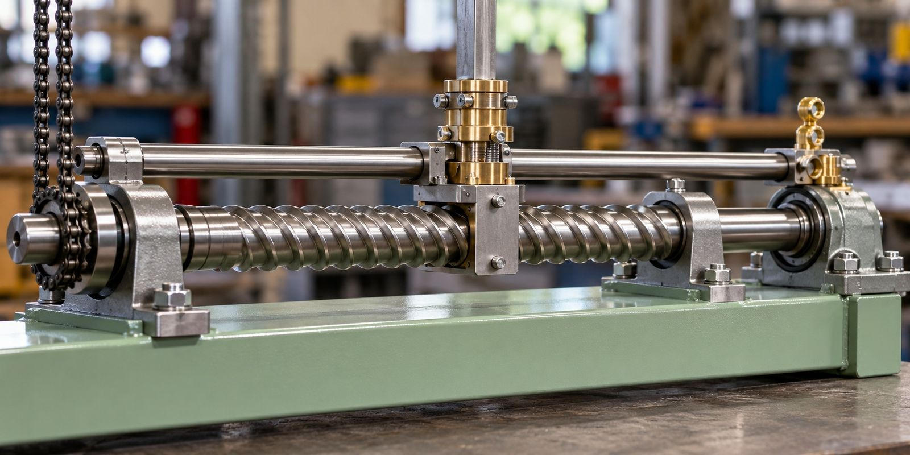
The T250 self-reversing screw traverses the tape across the spool, so it is laid evenly onto the SHIFT standard spool.
Shade net care
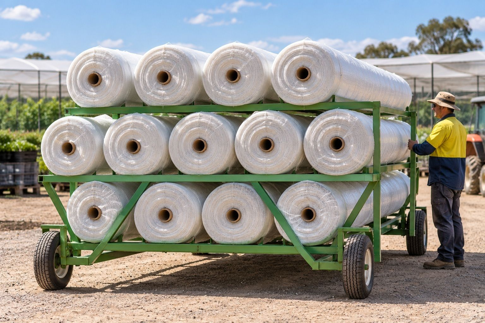
Shade net trolley
Moves 13 rolls of 6 m net, enough for more than half a hectare of tunnels. Holds twice as many rolls of the 3 m net for Jr tunnels. Towed by vehicle or tractor.
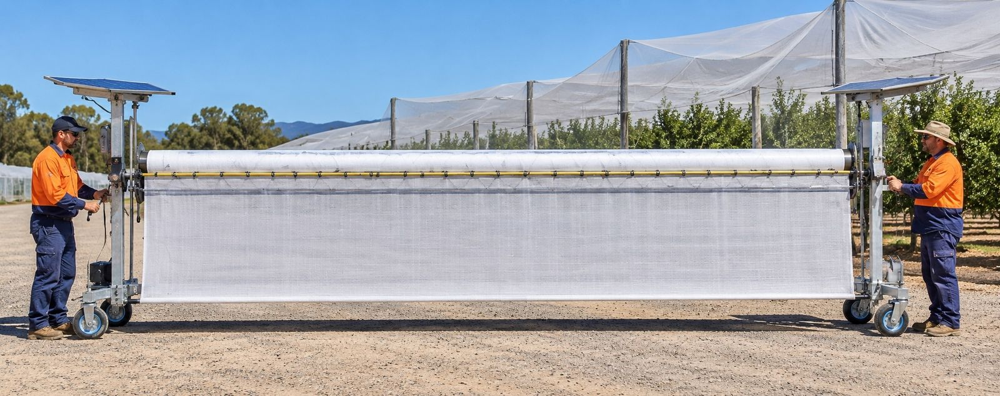
Shade net winder
Winds nets for reuse, manually or automated, with a tensioner that keeps rolls tight and crease-free. Nylon strips, noose buckles and a 4 mm wire rope finish each tunnel neatly.
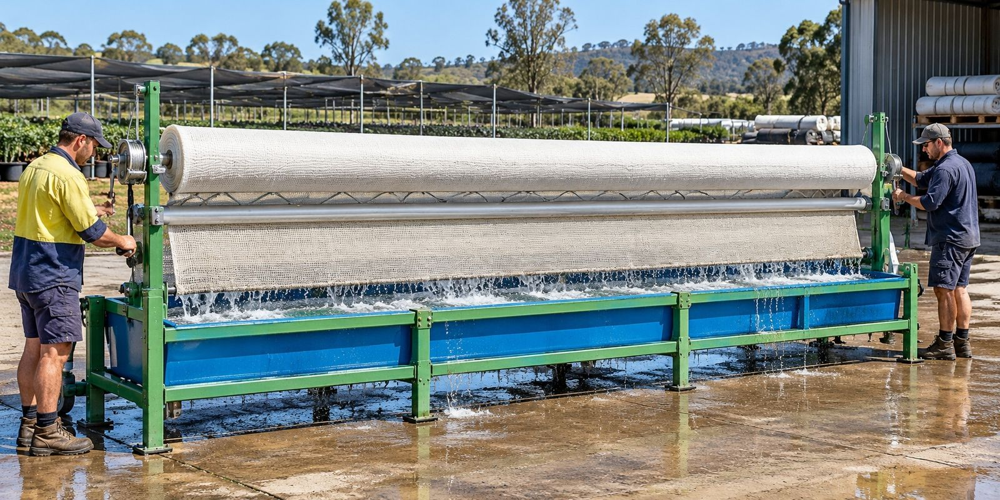
Shade net cleaner
Dirty white net blocks light and causes bolting. The 6 m roll is winched into the cleaning bath and cranked forward and back; a smaller cleaner without winches serves the 3 m net.
Platform · Coordination, federation, value flow
The machines produce food. Holons organizes the people, tasks, needs and rewards around that production, from one farm plot up to a whole bioregion.
What a holon is
A holon is something that is a whole in itself and also part of something bigger. A person is complete, but also belongs to groups, in the way a cell belongs to an organism. Nature repeats this pattern from particles through people and societies to galaxies. Holons uses it to design organizations, with a socio-economic system built around the needs of people and the planet as the larger aim.
Holons is a separate project, about ten years in the making, and the base layer the AgroSphere vision builds on. Think of it as an operating system for a community.
Three failures it is built to fix
- Invisible contribution. Work nobody sees, which leads to burnout.
- Coordination collapse. Group chats and spreadsheets stop keeping up.
- Capital leakage. Value flows out of the community to large corporations.
Three connected functions
Coordination
Tracks who is doing what. Post a need or a task in a Telegram bot and it goes onto shared lists, a shared ledger and a dashboard.
In AgroSpherePlanning the tasks and dependencies of the field trial.
Federation
Groups connect while keeping their own identity and autonomy.
In AgroSphereFarmer groups, machinery rings and community hubs linking up across sites.
Irrigation
Value flow. Moves resources and rewards fairly through the network.
In AgroSpherePaying contributors to AgroSphere production and machines.
Fractal, from one square metre to a continent
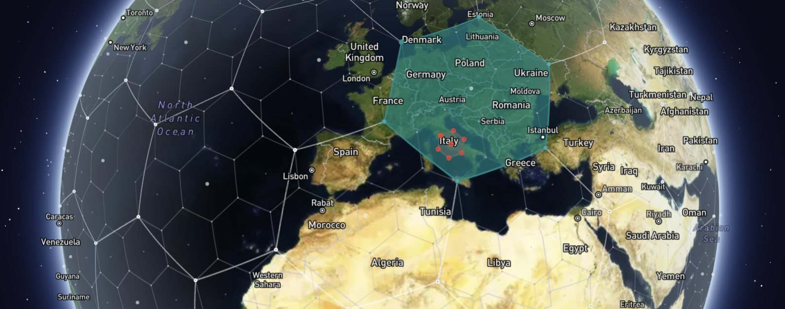
On the map, every hexagon is a holon. Each one sits inside a larger hexagon and contains smaller ones, all the way up and all the way down: household, then village, then bioregion.
The same structure carries geospatial, sociocratic governance. Small units decide for themselves and pass decisions upward, which keeps authority local.
Not every holon is a place, and holons do not have to be neighbours. A community, a project or a machinery ring can be a holon too, and can federate with any other, anywhere. Neighbouring holons get one advantage: their parent and child relationships are already filled in.
The network is peer-to-peer, running on the open-source HoloSphere with no central server and no owned database. Data lives on relays, phones and small computers, and a peer that goes offline picks up what it missed when it reconnects.
How the map works
One address for every place
The map uses H3, an open hexagonal grid with 16 resolutions. Any point on Earth falls into one cell at each resolution, and the same coordinates always give the same cell. Everyone working the same ground lands in the same holon.
Parents and children come built in
A neighbourhood holon's parent is a city holon; its children are block-level holons. Nobody has to draw up a tree of regions first.
Regions roll up
Ask one holon and you get its own data. Ask its parent and you get a roll-up across all its children: what a whole region needs, or how much its machines can produce.
Neighbours can listen in
Adjacent holons can subscribe to each other's lists without setting up each relationship by hand.
A bulletin board in every hexagon
A holon can pick a hexagon as its public bulletin board. What it publishes also lands in that cell, so anyone watching the region sees it without having to know the holon. This is stigmergy: people leave traces of needs and tasks, and others coordinate from them without contacting each other directly.
Three ways to publish
Send an item to one partner holon, drop it into a hexagon for everyone in that region, or broadcast it to every federated partner.
How it connects to the machines
Sharing machinery
In a machinery ring, geographically grouped farms own or share the expensive equipment together. That cuts transport costs, keeps the machines working, and puts them within reach of small organic farmers. A small group of vegetable growers can federate their holon with a larger ring to borrow heavier equipment.
Splitting rewards
When a holon receives value, it flows down through cascading splitters. Each community chooses what it counts: tasks completed, appreciation or hours. Tokens can trickle down by hours worked or litres delivered and be redeemed for the product itself. In peer production, value flows back to whoever made each component.
Credit, commitments and accounting
Holons has a mutual credit system that can run without money. Planned next: commitment pooling within and across holons, resource-event-agent (REA) accounting, and a ledger for each federation. Every holon records its needs and its yields.
Neighbourhood to bioregion
Gatherings pass the best of each level upward, from household to bioregion: "we have machines to produce this much." When a holon lacks capacity, it draws on neighbouring holons for physical help, or on any holon anywhere for information.
Community hubs
One holon per city ward, built around a community café, with events at a fractal rhythm: ward, then cluster, then city. The aim is a demonstration holon with a tree nursery for a food forest and a farm-to-fork restaurant.
Human practices
Members commit to Deep Humanity workshops so that strangers can work well together, and consumers become prosumers. Holons also stores ready-made agreement templates, such as leases and permit requests.
Prosumers
Community members who are both consumers and contributors: operating the machinery, harvesting, and organising distribution.
Micro bio-economies
Machinery rings and community structures seed localized micro bio-economies: resilient local food systems, drawing on permaculture and agroforestry, that rely less on long supply chains.
Exit to community
The aim is for the technology to become an open-source toolkit, so that communities anywhere can build their own regenerative food systems.
AgroSphere's own working holon
The current version, the Hubs Network, is the holon AgroSphere works in. It maps the dependencies of the SHIFT field trial, step by step.
AgroSphere leads with the farm. Holons is the infrastructure underneath, in the way the internet is infrastructure rather than a business in itself.
- Choose the cultivar
- Secure seedlings
- Prepare the field
- Program the PLC
- Run the demonstration